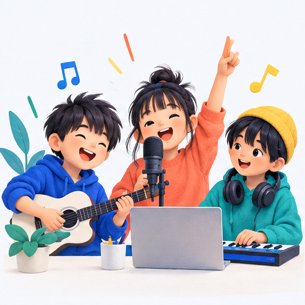
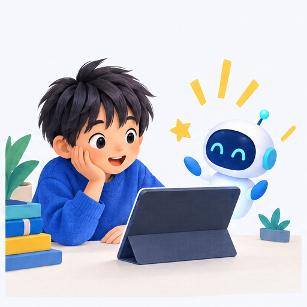
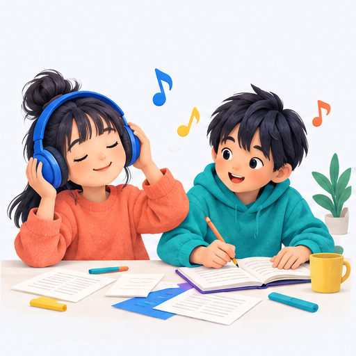
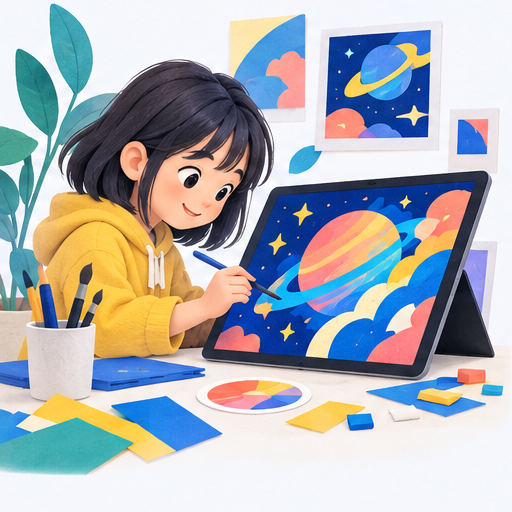
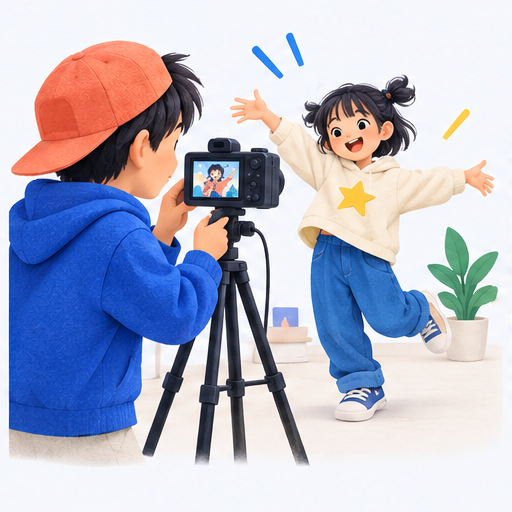
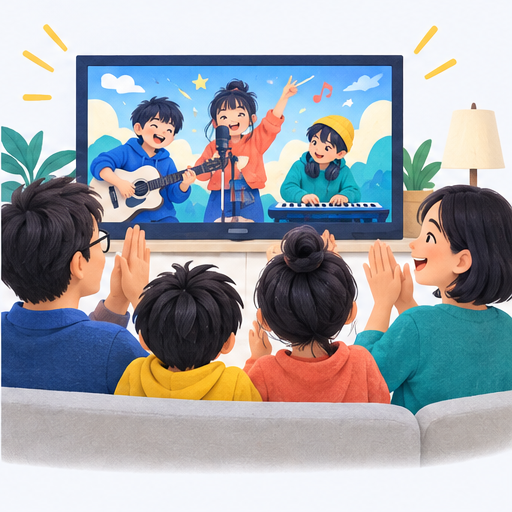

第1回
体験
AIを知る
作品のイメージ
01 全5回の子ども向けAI創作講座
子どもたちが主役の「AI × 音楽 × 映像」創作体験
5回で、歌・ジャケット・MVまでつくる！

講座コンセプト
AIは、アイデアを形にする道具
どんな気持ちを
作品にしたい？
AIに伝えて
いくつか作ってみる
みんなで話して
自分たちらしくする
思いつきが、歌になり、絵になり、映像になる。
全5回
第1回
AIを知る
作品のイメージ
第2回
歌詞と曲を選ぶ
歌詞・楽曲
第3回
世界観を描く
ジャケット・ポスター
第4回
写真や動画を撮る
MVの映像素材
第5回
仕上げて届ける
完成MV・クレジット
毎回10分のAIミニ授業 ＋ 手を動かす創作体験
第1回
知る・見る・ワクワクする
完成イメージをみんなで見る
文章・音楽・画像・映像のデモ
使う道具と基本の約束を知る

今日のゴールつくりたい作品のイメージ
第2回
考える・話し合う・選ぶ
好きな言葉や気持ちを出し合う
AIの歌詞を自分たちの言葉に直す
曲調を聴き比べ、みんなで選ぶ

今日のゴールオリジナルの歌詞と楽曲
第3回
想像する・伝える・デザインする
歌の世界を色や言葉で表す
AIとジャケットの画像をつくる
タイトルを入れてポスターにする

今日のゴール作品の顔になるビジュアル
第4回
参加する・表現する・映像にする
写真や短い動画を撮影する
AIも使いながら映像素材をつくる
音楽に合う場面をみんなで選ぶ

今日のゴール一人ひとりが参加した映像素材
顔出し以外に、手元・後ろ姿・イラストでの参加も選べます
第5回
完成させる・発表する・共有する
歌・画像・映像をひとつのMVへ
工夫したところを自分の言葉で紹介
制作者名と共有範囲を確認する

今日のゴール完成MVと「できた！」の実感
毎回10分
つくる体験に、「なぜ？」「どう使う？」を重ねる
第1回
AIはどこから来たの？
第2回
何ができて、何が苦手？
第3回
暮らしはどう変わる？
第4回
働き方はどう変わる？
第5回
自分はどう使いたい？
5つの力
好き・気になるを、作品の種にする
イメージを伝え、頼み方を工夫する
AIの答えを比べて、自分で判断する
違うアイデアを聞き、いっしょに決める
工夫を重ね、完成させて人に伝える
作品の届け方
作品が、学びを伝えるきっかけになる
「ここを自分で考えた！」
工夫を説明できる喜び
作品を囲んで話す
挑戦や成長に気づく
応援や感想が届く
次の創作が楽しみに
共有するか、誰に見せるかは、本人と保護者で選べます。
約束
撮影・AIへの素材入力・作品掲載・公開範囲を事前に説明し、項目ごとに確認
顔出しは任意。手元・後ろ姿・イラストも選択可。制作者名はニックネームなどを選べる
公開前に本人・保護者が完成版を確認。一般公開は任意。家族向けの共有も選べる
利用ツールの年齢条件・素材の権利を確認。写真などの保管期間・削除窓口を決める
限定公開のリンクも転送される可能性があるため、共有先を確認します。
13
自分のアイデアが、みんなの作品になる。
AIと一緒に、世界にひとつだけの音楽作品をつくろう！
子どもたちが主役の「AI × 音楽 × 映像」創作体験